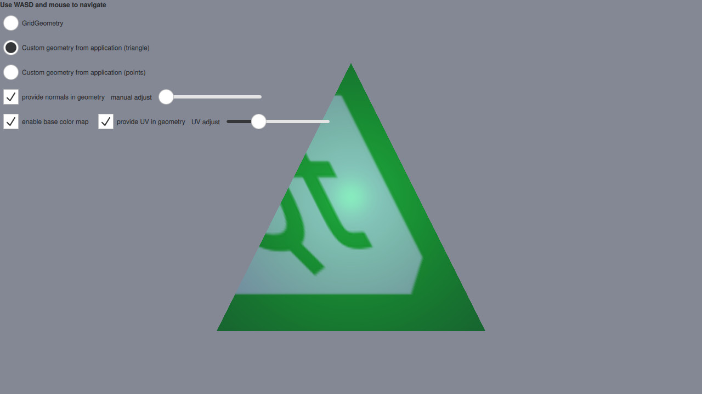

Qt Quick 3D - Custom Geometry Example
Demonstrates providing custom vertex data from C++ and QML.

This example makes use of QQuick3DGeometry and the geometry property of Model to render a mesh with vertex, normal, and texture coordinates specified from C++ and QML instead of a pre-baked asset.
In addition, the GridGeometry is also demonstrated. GridGeometry is a built-in QQuick3DGeometry implementation that provides a mesh with line primitives suitable for displaying a grid.
The focus on this example will be on the code that provides the custom geometry, so let's first have a look at the ExampleTriangleGeometry C++ header file:
class ExampleTriangleGeometry : public QQuick3DGeometry { Q_OBJECT QML_NAMED_ELEMENT(ExampleTriangleGeometry) Q_PROPERTY(bool normals READ normals WRITE setNormals NOTIFY normalsChanged) Q_PROPERTY(float normalXY READ normalXY WRITE setNormalXY NOTIFY normalXYChanged) Q_PROPERTY(bool uv READ uv WRITE setUV NOTIFY uvChanged) Q_PROPERTY(float uvAdjust READ uvAdjust WRITE setUVAdjust NOTIFY uvAdjustChanged) public: ExampleTriangleGeometry(); bool normals() const { return m_hasNormals; } void setNormals(bool enable); float normalXY() const { return m_normalXY; } void setNormalXY(float xy); bool uv() const { return m_hasUV; } void setUV(bool enable); float uvAdjust() const { return m_uvAdjust; } void setUVAdjust(float f); signals: void normalsChanged(); void normalXYChanged(); void uvChanged(); void uvAdjustChanged(); private: void updateData(); bool m_hasNormals = false; float m_normalXY = 0.0f; bool m_hasUV = false; float m_uvAdjust = 0.0f; };
The most important thing to notice is that our ExampleTriangleGeometry class inherits from QQuick3DGeometry and that we call the QML_NAMED_ELEMENT(ExampleTriangleGeometry) macro, making our class accessible in QML. There are also a few properties defined through the Q_PROPERTY macro which are automatically exposed in our QML object. Now, let's look at the QML Model:
Model { id: triangleModel visible: false scale: Qt.vector3d(100, 100, 100) geometry: ExampleTriangleGeometry { normals: cbNorm.checked normalXY: sliderNorm.value uv: cbUV.checked uvAdjust: sliderUV.value } materials: [ DefaultMaterial { Texture { id: baseColorMap source: "qt_logo_rect.png" } cullMode: DefaultMaterial.NoCulling diffuseMap: cbTexture.checked ? baseColorMap : null specularAmount: 0.5 } ] }
Note that we specify the geometry property to use our ExampleTriangleGeometry class, with the relevant properties specified. This is all that is needed on the QML side to use a custom geometry.
Now, lets look at the other important part of the C++ code, namely the updateData() method. This method creates and uploads the data for our custom geometry whenever a ExampleTriangleGeometry class is created or any of its QML properties are updated.
void ExampleTriangleGeometry::updateData() { clear(); int stride = 3 * sizeof(float); if (m_hasNormals) stride += 3 * sizeof(float); if (m_hasUV) stride += 2 * sizeof(float); QByteArray vertexData(3 * stride, Qt::Initialization::Uninitialized); float *p = reinterpret_cast<float *>(vertexData.data()); // a triangle, front face = counter-clockwise *p++ = -1.0f; *p++ = -1.0f; *p++ = 0.0f; if (m_hasNormals) { *p++ = m_normalXY; *p++ = m_normalXY; *p++ = 1.0f; } if (m_hasUV) { *p++ = 0.0f + m_uvAdjust; *p++ = 0.0f + m_uvAdjust; } *p++ = 1.0f; *p++ = -1.0f; *p++ = 0.0f; if (m_hasNormals) { *p++ = m_normalXY; *p++ = m_normalXY; *p++ = 1.0f; } if (m_hasUV) { *p++ = 1.0f - m_uvAdjust; *p++ = 0.0f + m_uvAdjust; } *p++ = 0.0f; *p++ = 1.0f; *p++ = 0.0f; if (m_hasNormals) { *p++ = m_normalXY; *p++ = m_normalXY; *p++ = 1.0f; } if (m_hasUV) { *p++ = 1.0f - m_uvAdjust; *p++ = 1.0f - m_uvAdjust; } setVertexData(vertexData); setStride(stride); setBounds(QVector3D(-1.0f, -1.0f, 0.0f), QVector3D(+1.0f, +1.0f, 0.0f)); setPrimitiveType(QQuick3DGeometry::PrimitiveType::Triangles); addAttribute(QQuick3DGeometry::Attribute::PositionSemantic, 0, QQuick3DGeometry::Attribute::F32Type); if (m_hasNormals) { addAttribute(QQuick3DGeometry::Attribute::NormalSemantic, 3 * sizeof(float), QQuick3DGeometry::Attribute::F32Type); } if (m_hasUV) { addAttribute(QQuick3DGeometry::Attribute::TexCoordSemantic, m_hasNormals ? 6 * sizeof(float) : 3 * sizeof(float), QQuick3DGeometry::Attribute::F32Type); } }
The method starts by calling clear() to clear all previously uploaded data. It then computes the stride for the vertices, taking into account the presence of normals and uv coordinates. Then a byte array is created to hold the vertex buffer, which is then filled with vertices for a single triangle with corners in (-1, -1, 0), (1, -1, 0) and (0, 1, 0).
Then the vertex data is uploaded and the stride is set by calling setVertexData() and setStride(). The bounds of the geometry is set by calling setBounds. Although not used in this example setting the bounds is needed for shadows to work. Then the primitive type is set by calling setPrimitiveType(). Lastly, we specify how the attributes for position, normal and uv coords are laid out in memory in the previously uploaded buffer by calling addAttribute() for each attribute.
Files:
- customgeometry/CMakeLists.txt
- customgeometry/CustomGeometryExample/Main.qml
- customgeometry/CustomGeometryExample/TorusMesh.qml
- customgeometry/CustomGeometryExample/customgeometry_qml_module_dir_map.qrc
- customgeometry/CustomGeometryExample/qmldir
- customgeometry/Main.qml
- customgeometry/TorusMesh.qml
- customgeometry/customgeometry.pro
- customgeometry/examplegeometry.cpp
- customgeometry/examplegeometry.h
- customgeometry/main.cpp
- customgeometry/qmldir
Images:
{kind=link}
{kind=link}